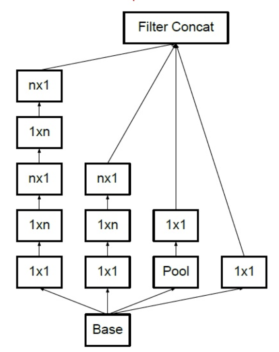

3.4 GoogLeNet¶
学习目标
- 知道GoogLeNet网络结构的特点
- 能够利用GoogLeNet完成图像分类

GoogLeNet的名字不是GoogleNet，而是GoogLeNet，这是为了致敬LeNet。GoogLeNet和AlexNet/VGGNet这类依靠加深网络结构的深度的思想不完全一样。GoogLeNet在加深度的同时做了结构上的创新，引入了一个叫做Inception的结构来代替之前的卷积加激活的经典组件。GoogLeNet在ImageNet分类比赛上的Top-5错误率降低到了6.7%。。
1.Inception 块¶
GoogLeNet中的基础卷积块叫作Inception块，得名于同名电影《盗梦空间》（Inception）。Inception块在结构比较复杂，如下图所示：

Inception块里有4条并行的线路。前3条线路使用窗口大小分别是1\times 1、3\times 3和5\times 5的卷积层来抽取不同空间尺寸下的信息，其中中间2个线路会对输入先做1\times 1卷积来减少输入通道数，以降低模型复杂度。第4条线路则使用3\times 3最大池化层，后接1\times 1卷积层来改变通道数。4条线路都使用了合适的填充来使输入与输出的高和宽一致。最后我们将每条线路的输出在通道维上连结,并向后进行传输。
1\times 1卷积：
它的计算方法和其他卷积核一样，唯一不同的是它的大小是1\times1，没有考虑在特征图局部信息之间的关系。
它的作用主要是：
-
实现跨通道的交互和信息整合
-
卷积核通道数的降维和升维，减少网络参数
在tf.keras中实现Inception模块，各个卷积层卷积核的个数通过输入参数来控制，如下所示：
# 定义Inception模块
class Inception(tf.keras.layers.Layer):
# 输入参数为各个卷积的卷积核个数
def __init__(self, c1, c2, c3, c4):
super().__init__()
# 线路1：1 x 1卷积层，激活函数是RELU，padding是same
self.p1_1 = tf.keras.layers.Conv2D(
c1, kernel_size=1, activation='relu', padding='same')
# 线路2，1 x 1卷积层后接3 x 3卷积层,激活函数是RELU，padding是same
self.p2_1 = tf.keras.layers.Conv2D(
c2[0], kernel_size=1, padding='same', activation='relu')
self.p2_2 = tf.keras.layers.Conv2D(c2[1], kernel_size=3, padding='same',
activation='relu')
# 线路3，1 x 1卷积层后接5 x 5卷积层,激活函数是RELU，padding是same
self.p3_1 = tf.keras.layers.Conv2D(
c3[0], kernel_size=1, padding='same', activation='relu')
self.p3_2 = tf.keras.layers.Conv2D(c3[1], kernel_size=5, padding='same',
activation='relu')
# 线路4，3 x 3最大池化层后接1 x 1卷积层,激活函数是RELU，padding是same
self.p4_1 = tf.keras.layers.MaxPool2D(
pool_size=3, padding='same', strides=1)
self.p4_2 = tf.keras.layers.Conv2D(
c4, kernel_size=1, padding='same', activation='relu')
# 完成前向传播过程
def call(self, x):
# 线路1
p1 = self.p1_1(x)
# 线路2
p2 = self.p2_2(self.p2_1(x))
# 线路3
p3 = self.p3_2(self.p3_1(x))
# 线路4
p4 = self.p4_2(self.p4_1(x))
# 在通道维上concat输出
outputs = tf.concat([p1, p2, p3, p4], axis=-1)
return outputs
指定通道数，对Inception模块进行实例化：
Inception(64, (96, 128), (16, 32), 32)
2.GoogLeNet模型¶
GoogLeNet主要由Inception模块构成，如下图所示：

整个网络架构我们分为五个模块，每个模块之间使用步幅为2的3\times 3最大池化层来减小输出高宽。

2.1 B1模块¶
第一模块使用一个64通道的7\times 7卷积层。
# 定义模型的输入
inputs = tf.keras.Input(shape=(224,224,3),name = "input")
# b1 模块
# 卷积层7*7的卷积核，步长为2，pad是same，激活函数RELU
x = tf.keras.layers.Conv2D(64, kernel_size=7, strides=2, padding='same', activation='relu')(inputs)
# 最大池化：窗口大小为3*3，步长为2，pad是same
x = tf.keras.layers.MaxPool2D(pool_size=3, strides=2, padding='same')(x)
# b2 模块
2.2 B2模块¶
第二模块使用2个卷积层：首先是64通道的1\times 1卷积层，然后是将通道增大3倍的3\times 3卷积层。
# b2 模块
# 卷积层1*1的卷积核，步长为2，pad是same，激活函数RELU
x = tf.keras.layers.Conv2D(64, kernel_size=1, padding='same', activation='relu')(x)
# 卷积层3*3的卷积核，步长为2，pad是same，激活函数RELU
x = tf.keras.layers.Conv2D(192, kernel_size=3, padding='same', activation='relu')(x)
# 最大池化：窗口大小为3*3，步长为2，pad是same
x = tf.keras.layers.MaxPool2D(pool_size=3, strides=2, padding='same')(x)
2.3 B3模块¶
第三模块串联2个完整的Inception块。第一个Inception块的输出通道数为64+128+32+32=256。第二个Inception块输出通道数增至128+192+96+64=480。
# b3 模块
# Inception
x = Inception(64, (96, 128), (16, 32), 32)(x)
# Inception
x = Inception(128, (128, 192), (32, 96), 64)(x)
# 最大池化：窗口大小为3*3，步长为2，pad是same
x = tf.keras.layers.MaxPool2D(pool_size=3, strides=2, padding='same')(x)
2.4 B4模块¶
第四模块更加复杂。它串联了5个Inception块，其输出通道数分别是192+208+48+64=512、160+224+64+64=512、128+256+64+64=512、112+288+64+64=528和256+320+128+128=832。并且增加了辅助分类器，根据实验发现网络的中间层具有很强的识别能力，为了利用中间层抽象的特征，在某些中间层中添加含有多层的分类器，如下图所示：

实现如下所示：
def aux_classifier(x, filter_size):
#x:输入数据，filter_size:卷积层卷积核个数，全连接层神经元个数
# 池化层
x = tf.keras.layers.AveragePooling2D(
pool_size=5, strides=3, padding='same')(x)
# 1x1 卷积层
x = tf.keras.layers.Conv2D(filters=filter_size[0], kernel_size=1, strides=1,
padding='valid', activation='relu')(x)
# 展平
x = tf.keras.layers.Flatten()(x)
# 全连接层1
x = tf.keras.layers.Dense(units=filter_size[1], activation='relu')(x)
# softmax输出层
x = tf.keras.layers.Dense(units=10, activation='softmax')(x)
return x
b4模块的实现：
# b4 模块
# Inception
x = Inception(192, (96, 208), (16, 48), 64)(x)
# 辅助输出1
aux_output_1 = aux_classifier(x, [128, 1024])
# Inception
x = Inception(160, (112, 224), (24, 64), 64)(x)
# Inception
x = Inception(128, (128, 256), (24, 64), 64)(x)
# Inception
x = Inception(112, (144, 288), (32, 64), 64)(x)
# 辅助输出2
aux_output_2 = aux_classifier(x, [128, 1024])
# Inception
x = Inception(256, (160, 320), (32, 128), 128)(x)
# 最大池化
x = tf.keras.layers.MaxPool2D(pool_size=3, strides=2, padding='same')(x)
2.5 B5模块¶
第五模块有输出通道数为256+320+128+128=832和384+384+128+128=1024的两个Inception块。后面紧跟输出层，该模块使用全局平均池化层（GAP）来将每个通道的高和宽变成1。最后输出变成二维数组后接输出个数为标签类别数的全连接层。
全局平均池化层（GAP）
用来替代全连接层，将特征图每一通道中所有像素值相加后求平均，得到就是GAP的结果，在将其送入后续网络中进行计算
实现过程是：
# b5 模块
# Inception
x = Inception(256, (160, 320), (32, 128), 128)(x)
# Inception
x = Inception(384, (192, 384), (48, 128), 128)(x)
# GAP
x = tf.keras.layers.GlobalAvgPool2D()(x)
# 输出层
main_outputs = tf.keras.layers.Dense(10,activation='softmax')(x)
# 使用Model来创建模型，指明输入和输出
构建GoogLeNet模型并通过summary来看下模型的结构：
# 使用Model来创建模型，指明输入和输出
model = tf.keras.Model(inputs=inputs, outputs=[main_outputs,aux_output_1，aux_output_2])
model.summary()
Model: "functional_3"
_________________________________________________________________
Layer (type) Output Shape Param #
=================================================================
input (InputLayer) [(None, 224, 224, 3)] 0
_________________________________________________________________
conv2d_122 (Conv2D) (None, 112, 112, 64) 9472
_________________________________________________________________
max_pooling2d_27 (MaxPooling (None, 56, 56, 64) 0
_________________________________________________________________
conv2d_123 (Conv2D) (None, 56, 56, 64) 4160
_________________________________________________________________
conv2d_124 (Conv2D) (None, 56, 56, 192) 110784
_________________________________________________________________
max_pooling2d_28 (MaxPooling (None, 28, 28, 192) 0
_________________________________________________________________
inception_19 (Inception) (None, 28, 28, 256) 163696
_________________________________________________________________
inception_20 (Inception) (None, 28, 28, 480) 388736
_________________________________________________________________
max_pooling2d_31 (MaxPooling (None, 14, 14, 480) 0
_________________________________________________________________
inception_21 (Inception) (None, 14, 14, 512) 376176
_________________________________________________________________
inception_22 (Inception) (None, 14, 14, 512) 449160
_________________________________________________________________
inception_23 (Inception) (None, 14, 14, 512) 510104
_________________________________________________________________
inception_24 (Inception) (None, 14, 14, 528) 605376
_________________________________________________________________
inception_25 (Inception) (None, 14, 14, 832) 868352
_________________________________________________________________
max_pooling2d_37 (MaxPooling (None, 7, 7, 832) 0
_________________________________________________________________
inception_26 (Inception) (None, 7, 7, 832) 1043456
_________________________________________________________________
inception_27 (Inception) (None, 7, 7, 1024) 1444080
_________________________________________________________________
global_average_pooling2d_2 ( (None, 1024) 0
_________________________________________________________________
dense_10 (Dense) (None, 10) 10250
=================================================================
Total params: 5,983,802
Trainable params: 5,983,802
Non-trainable params: 0
___________________________________________________________
3.手写数字识别¶
因为ImageNet数据集较大训练时间较长，我们仍用前面的MNIST数据集来演示GoogLeNet。读取数据的时将图像高和宽扩大到图像高和宽224。这个通过tf.image.resize_with_pad来实现。
2.1 数据读取¶
首先获取数据,并进行维度调整：
import numpy as np
# 获取手写数字数据集
(train_images, train_labels), (test_images, test_labels) = mnist.load_data()
# 训练集数据维度的调整：N H W C
train_images = np.reshape(train_images,(train_images.shape[0],train_images.shape[1],train_images.shape[2],1))
# 测试集数据维度的调整：N H W C
test_images = np.reshape(test_images,(test_images.shape[0],test_images.shape[1],test_images.shape[2],1))
由于使用全部数据训练时间较长，我们定义两个方法获取部分数据，并将图像调整为224*224大小，进行模型训练：(与VGG中是一样的)
# 定义两个方法随机抽取部分样本演示
# 获取训练集数据
def get_train(size):
# 随机生成要抽样的样本的索引
index = np.random.randint(0, np.shape(train_images)[0], size)
# 将这些数据resize成22*227大小
resized_images = tf.image.resize_with_pad(train_images[index],224,224,)
# 返回抽取的
return resized_images.numpy(), train_labels[index]
# 获取测试集数据
def get_test(size):
# 随机生成要抽样的样本的索引
index = np.random.randint(0, np.shape(test_images)[0], size)
# 将这些数据resize成224*224大小
resized_images = tf.image.resize_with_pad(test_images[index],224,224,)
# 返回抽样的测试样本
return resized_images.numpy(), test_labels[index]
调用上述两个方法，获取参与模型训练和测试的数据集：
# 获取训练样本和测试样本
train_images,train_labels = get_train(256)
test_images,test_labels = get_test(128)
3.2 模型编译¶
# 指定优化器，损失函数和评价指标
optimizer = tf.keras.optimizers.SGD(learning_rate=0.01, momentum=0.0)
# 模型有3个输出，所以指定损失函数对应的权重系数
net.compile(optimizer=optimizer,
loss='sparse_categorical_crossentropy',
metrics=['accuracy'],loss_weights=[1,0.3,0.3])
3.3 模型训练¶
# 模型训练：指定训练数据，batchsize,epoch,验证集
net.fit(train_images,train_labels,batch_size=128,epochs=3,verbose=1,validation_split=0.1)
训练过程：
Epoch 1/3
2/2 [==============================] - 8s 4s/step - loss: 2.9527 - accuracy: 0.1174 - val_loss: 3.3254 - val_accuracy: 0.1154
Epoch 2/3
2/2 [==============================] - 7s 4s/step - loss: 2.8111 - accuracy: 0.0957 - val_loss: 2.2718 - val_accuracy: 0.2308
Epoch 3/3
2/2 [==============================] - 7s 4s/step - loss: 2.3055 - accuracy: 0.0957 - val_loss: 2.2669 - val_accuracy: 0.2308
2.4 模型评估¶
# 指定测试数据
net.evaluate(test_images,test_labels,verbose=1)
输出为：
4/4 [==============================] - 1s 338ms/step - loss: 2.3110 - accuracy: 0.0781
[2.310971260070801, 0.078125]
4.延伸版本¶
GoogLeNet是以InceptionV1为基础进行构建的，所以GoogLeNet也叫做InceptionNet,在随后的⼏年⾥，研究⼈员对GoogLeNet进⾏了数次改进， 就又产生了InceptionV2，V3,V4等版本。
4.1 InceptionV2¶
在InceptionV2中将大卷积核拆分为小卷积核，将V1中的5\times 5的卷积用两个3\times 3的卷积替代，从而增加网络的深度，减少了参数。

4.2 InceptionV3¶
将n×n卷积分割为1×n和n×1两个卷积，例如，一个的3\times3卷积首先执行一个1\times3的卷积，然后执行一个3\times1的卷积,这种方法的参数量和计算量都比原来降低。

总结
- 知道GoogLeNet的网络架构：有基础模块Inception构成
- 能够利用GoogleNet完成图像分类